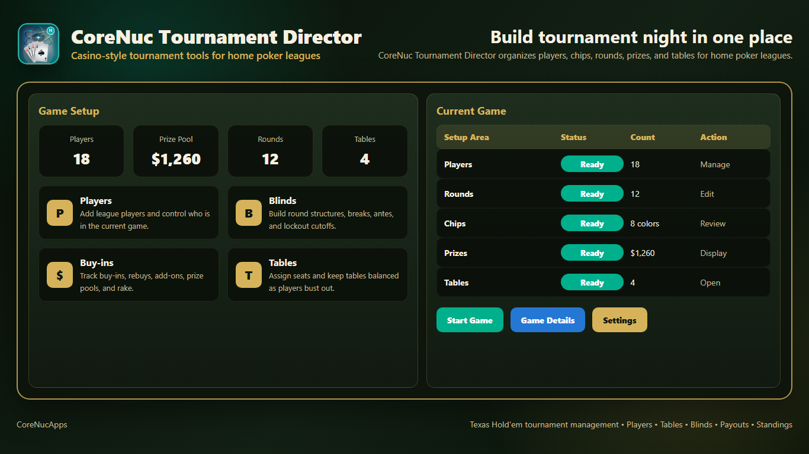
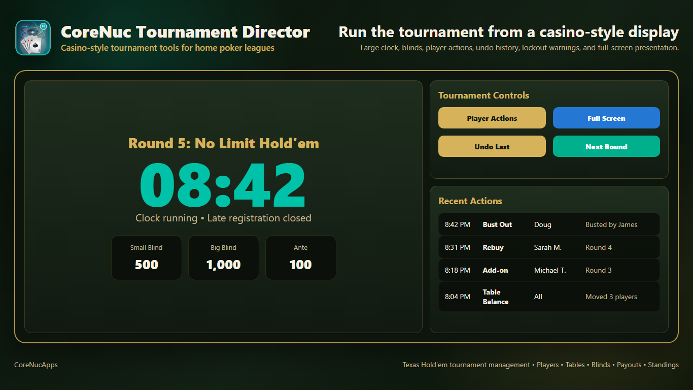
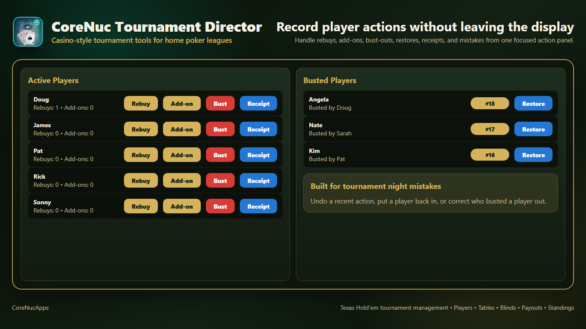
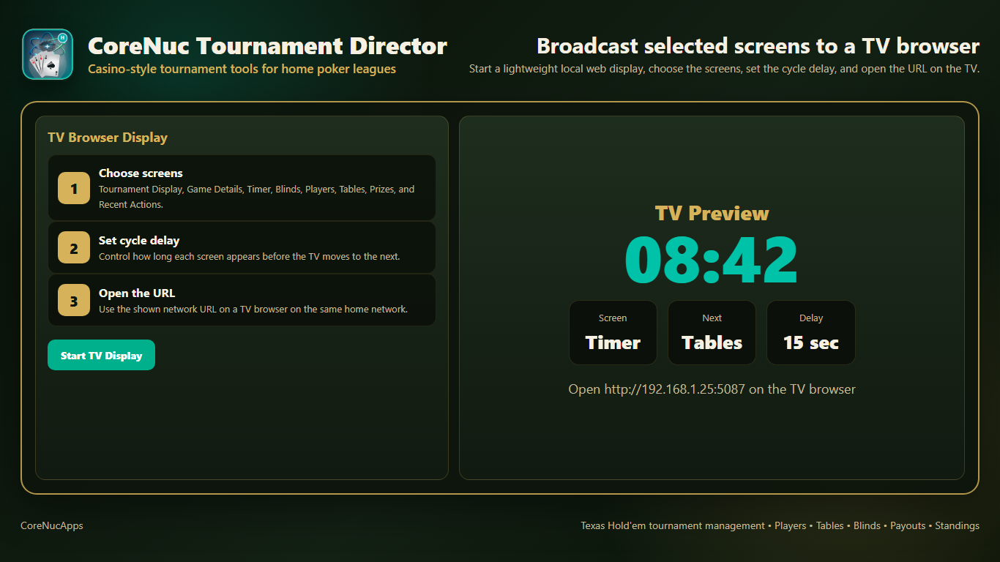
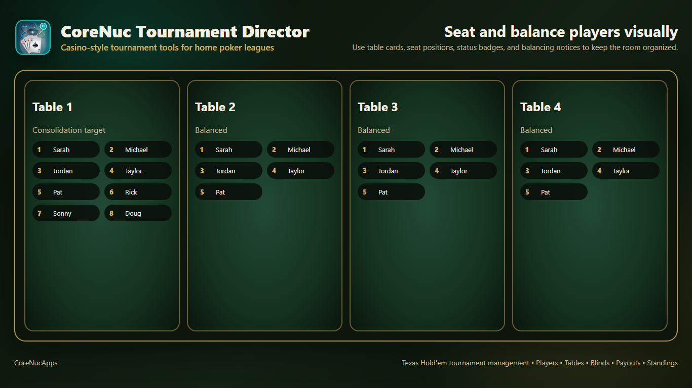
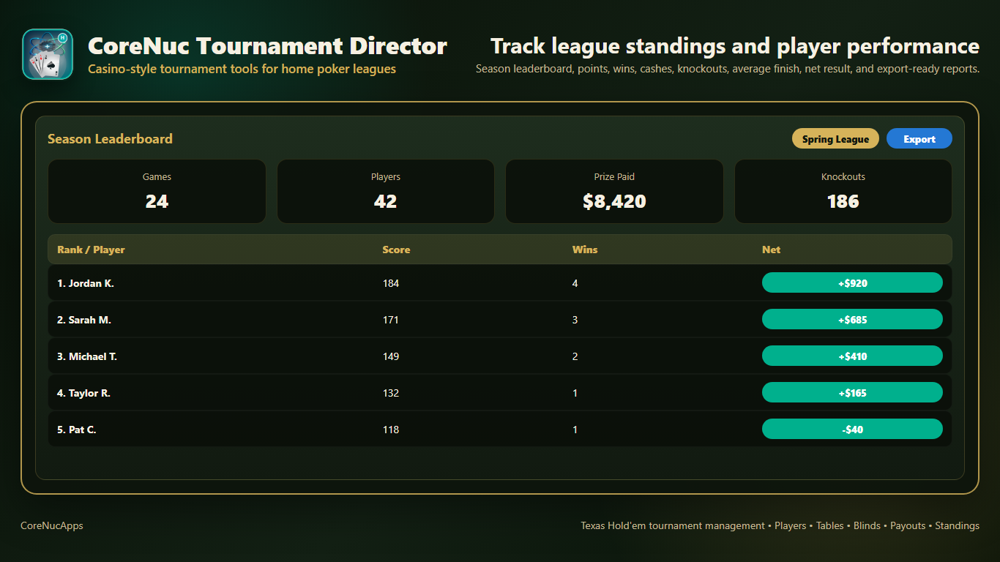
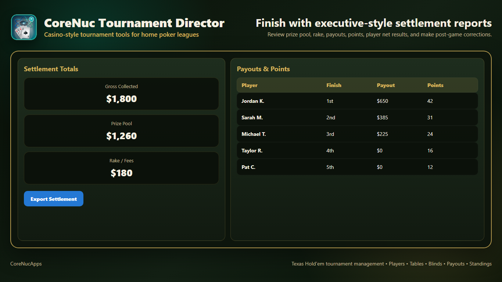
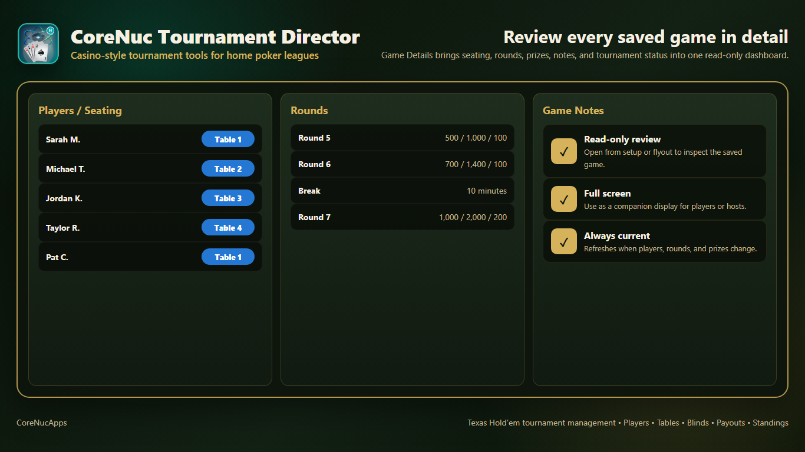

Game Setup

What This Shows
- High-level counts for players, prize pool, blind rounds, and tables.
- Setup shortcuts for players, blinds, buy-ins, and tables.
- A current game checklist showing whether players, rounds, chips, prizes, and tables are ready.
- Action buttons for starting the game, opening game details, and changing settings.
Tournament Display

What This Shows
- A large round timer with current round name and clock status.
- Current small blind, big blind, and ante values.
- Controls for player actions, undo, full screen, and advancing to the next round.
- A recent actions panel that helps hosts spot and correct mistakes quickly.
Player Actions

What This Shows
- Active players with quick buttons for rebuys, add-ons, bust outs, and receipts.
- Busted players with finish position badges and restore controls.
- Support for correcting tournament-night mistakes without leaving the focused action panel.
- Clear player status information so hosts can keep the game moving.
TV Browser Display

What This Shows
- Steps for choosing which screens appear on the TV display.
- A cycle delay setting that controls how long each TV screen stays visible.
- A local network URL for opening the display on a TV or another computer.
- A preview of the current TV screen, next screen, and delay timing.
Tables And Seating

What This Shows
- Four tournament tables shown as separate table cards.
- Seat numbers and player names organized visually inside each table.
- Balance status for each table and a consolidation target when players need to be moved.
- A layout built for scanning during live room management.
Player Stats

What This Shows
- Season leaderboard totals for games, players, prize paid, and knockouts.
- Ranked player results with score, wins, and net result.
- A league or season selector for narrowing the standings.
- An export action for creating shareable reports from the current stats.
Settlement

What This Shows
- Settlement totals for gross collected, prize pool, and rake or fees.
- Player finish positions, payout amounts, and points earned.
- A clear review point before the tournament is finalized.
- An export option for saving settlement details after the game.
Game Details

What This Shows
- Players and seating assignments with table badges.
- Upcoming rounds, blinds, antes, and break information.
- Game notes that explain read-only review, full-screen use, and automatic refresh behavior.
- A compact review surface for hosts or companion displays.